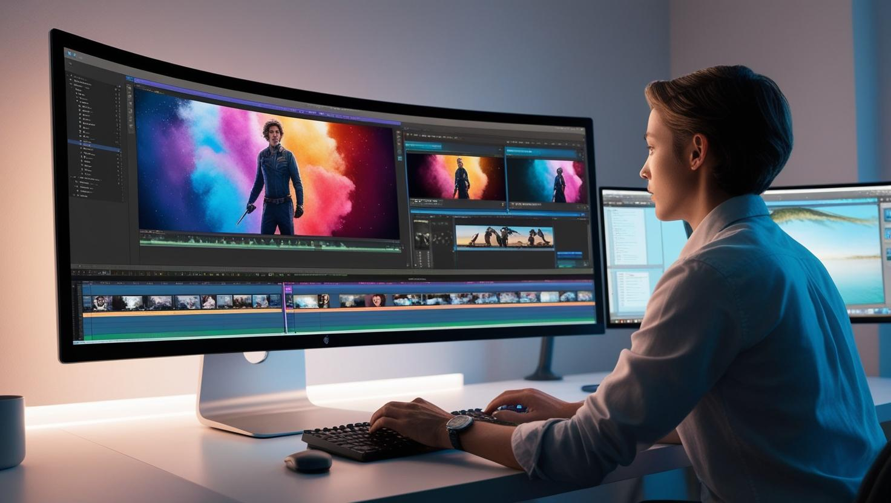
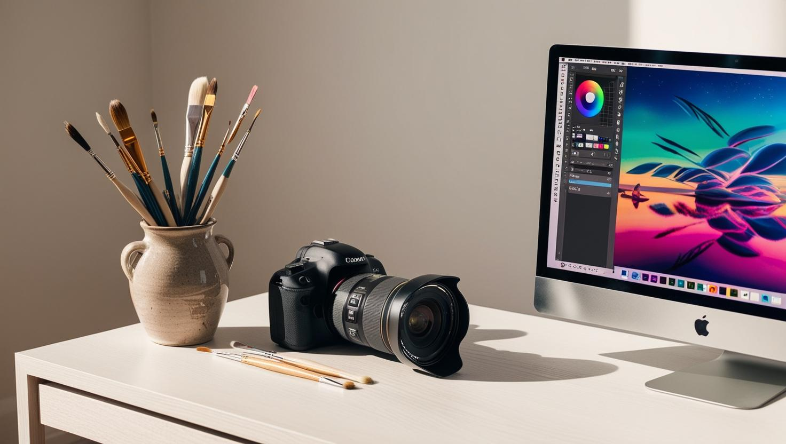

Con nuestro sitio web, obtendrá conocimientos básicos.
- Fundamentos de la Imagen Digital: Una imagen digital está compuesta por una cuadrícula de píxeles, y la resolución se refiere a la cantidad de píxeles en la imagen, lo que afecta la calidad y el nivel de detalle. La profundidad de color, por otro lado, se refiere al número de bits utilizados para representar el color de cada píxel. Una mayor profundidad de color permite representar un mayor número de colores.
- Técnicas de Mejora de Imágenes: Las técnicas de mejora de imágenes incluyen el ajuste de brillo y contraste, la aplicación de filtros y enmascarado, y la corrección de color. Estas técnicas ayudan a mejorar la visibilidad, realzar características específicas y ajustar los colores para obtener un efecto estético deseado.
- Compresión de Imágenes: La compresión de imágenes se puede realizar de dos maneras: sin pérdida y con pérdida. La compresión sin pérdida reduce el tamaño del archivo sin perder información, mientras que la compresión con pérdida sacrifica algo de calidad para reducir el tamaño del archivo.

Conocerá sobre el uso de las herramientas necesarias, para el tratado y edición de imágnes y videos.
- Adobe Photoshop Una de las herramientas más populares y poderosas para la edición de imágenes es Adobe Photoshop. Este software ofrece una amplia gama de funciones que permiten realizar desde ajustes básicos de color y brillo hasta complejas manipulaciones y composiciones de imágenes. Photoshop es conocido por su capacidad de trabajar con capas, lo que facilita la edición no destructiva y permite a los usuarios realizar cambios en una imagen sin alterar el archivo original.
- GIMP (GNU Image Manipulation Program) es una alternativa gratuita y de código abierto a Photoshop. Aunque no tiene todas las funciones avanzadas de Photoshop, GIMP ofrece una amplia gama de herramientas para la edición de imágenes, incluyendo ajustes de color, filtros y capas. Es una excelente opción para aquellos que buscan una solución económica sin sacrificar demasiadas funcionalidades.
- Canva Para aquellos que buscan una herramienta más sencilla y accesible, Canva es una excelente opción. Canva es una plataforma en línea que permite a los usuarios crear y editar imágenes y gráficos de manera intuitiva. Ofrece una amplia variedad de plantillas y recursos gráficos, lo que la convierte en una herramienta ideal para la creación de contenido para redes sociales, presentaciones y materiales de marketing.

Y se integrará en el mundo de los Sistemas Operativos:
Los primeros sistemas operativos surgieron en la década de 1950, diseñados para gestionar recursos de grandes computadoras mainframe. Con el tiempo, los SO evolucionaron para ser más accesibles y eficientes. Los sistemas operativos modernos han avanzado considerablemente, ofreciendo interfaces gráficas de usuario (GUI), soporte multitarea y compatibilidad con una amplia gama de hardware.